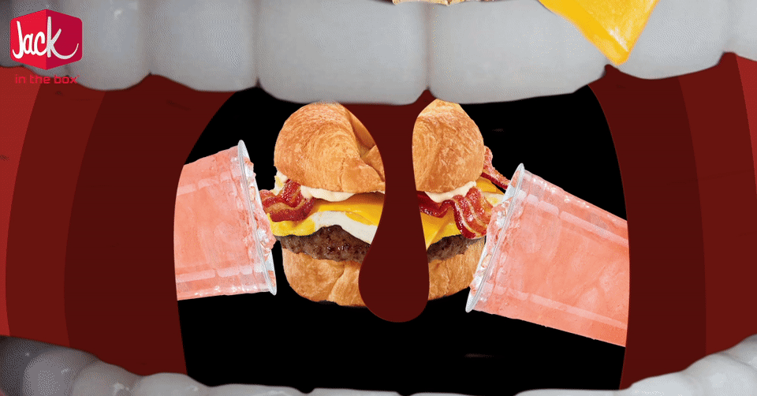
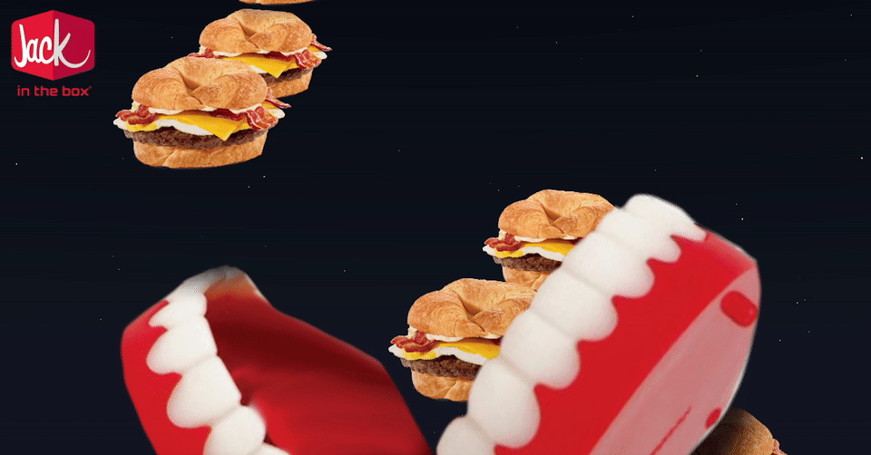
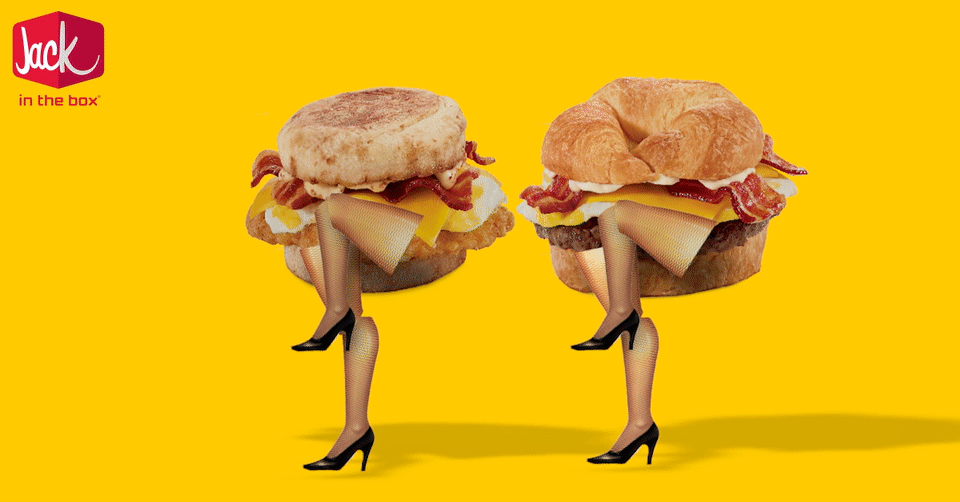
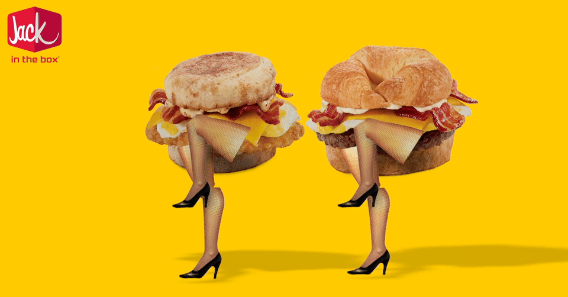

Jack in the Box is a client that likes to stay in the know, and on top of social trends. Leading up to the VMAs they wanted a piece of content that was culturally relevant. After some back and forth with the client we decided on a spoof of the iconic Hotline Bling music video. What better than Drake living in a Jack in the Box sign saucin' some buttery jacks? That's right, nothing.
BlizzCon is a huge event in the gaming community taking place in Southern California. Jack in the Box, as usual, had to be a part of it. After doing some research on what games were hot and consulting some of the gamers I went for an airborn battle scene. Why? Because WWII era planes are cool and they're even cooler when they shoot lasers and they're even cooler than that when hamburgers are the pilots.
The prompt for this assignment was pretty much to make four of the coolest, funnest, most viral-esque GIFs possible in a 24 hour period in order to promote JIB's Brunchfest. This is still one of my favorite pieces of work becuase it was demanding but so so fun. Juggling this assignment plus my regularly scheduled college courses proved to be an interesting challenge. By interesting challenge I mean I was photoshopping cheeseburgers in my communications lecture of 400 people.
  

Keeping with their traditon with keeping up with pop culture JIB wanted a social piece for the World Series of Poker. They once had a live action version of this video from years ago and wanted to recreate it. (View it here: https://www.youtube.com/watch?v=tXH5HL8ppxw) I put a modern twist on it and portrayed an animated Jack as quite the poker player. Who knew a white circle could have such a poker face?